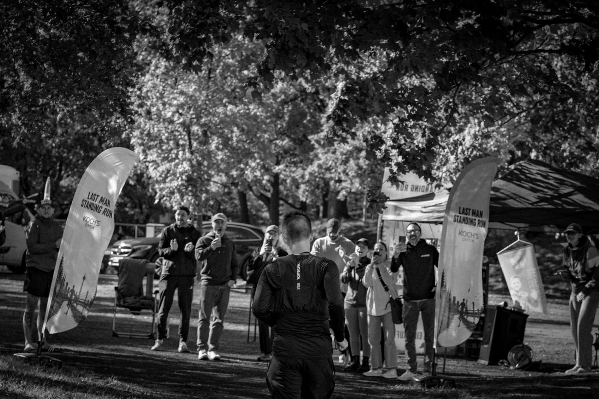
Einer bleibt stehen.
Jede Stunde eine Runde. Jede Stunde die gleiche Frage: noch eine? Der Backyard Ultra mitten in Düsseldorf, für Einsteiger*innen und Ultraläufer*innen.
Datum wird bald bekanntgegeben
Nicht der Erste sein. Der Letzte.
Du läufst jede volle Stunde eine 6-km-Runde. Was du an Zeit übrig hast, gehört dir: essen, trinken, Füße hochlegen. Pünktlich zur vollen Stunde steht die nächste Runde an.
Start zur vollen Stunde
Um 10:00 Uhr geht die erste Runde los, danach jede Stunde. Check-in ist ab 07:30 Uhr.
Zurück in unter 60 Minuten
Du musst die Runde schaffen und zur vollen Stunde wieder an der Startlinie stehen.
Weiter, bis nur einer übrig ist
Du scheidest aus, wenn du eine Runde nicht rechtzeitig beendest, nicht pünktlich wieder startest oder freiwillig aufhörst.
45 Starter*innen 2026, am Ende stand Nicko Statsenko nach 30 Runden und 180 km.
Loop of Glory
Sind nach Runde 59 noch mehrere im Rennen, entscheidet Runde 60. Wer sie am schnellsten beendet, ist der Last Man Standing 2027, oder die Last Woman.
Du musst kein Ultraläufer sein. Du musst nur wissen wollen, wie weit du kommst.
6 Kilometer sind für viele ein normaler Lauf. Aber eben nicht nur einmal. Wer zum ersten Mal an die eigene Grenze will, startet hier in einem fairen Umfeld. Wer Ultras kennt, bekommt ein Rennen, das im Kopf entschieden wird.
Einsteigerfreundlich
Kurze Runde, viel Zeit zur Erholung und Gleichgesinnte, die dich anschieben.
Erfahrene Ultras
Bis zu 60 Runden, Nacht im Park, Kopf gegen Körper.
Crews und Freunde
12 Pavillonplätze für dich und dein Team, dazu eine Besucherzone am Basis Camp.
Du läufst. Wir kümmern uns um den Rest.
Camp-Infrastruktur
Wetterschutz, Sitzgelegenheiten und Sanitäranlagen.
Dein Platz
Ca. 2 m² in der Athlete Zone für Isomatte, Feldbett oder Campingstuhl.
Getränke
Stilles Wasser und zuckerhaltige Cola.
Snacks
Gummibärchen, Salzstangen und Kekse.
Marathonpizza
Für alle nach absolvierten 42 km.
Profi-Fotos
Individuelle und professionelle Fotos von dir.
Urkunde und Medal of Honour
Zum Mitnehmen und Aufhängen.
Preisgeld und Medaille
250 € und Medaille für den/die Last Man Standing.
Weitere vollwertige Verpflegung bringst du selbst mit.
Dein Lager für bis zu 60 Stunden.
Das Camp ist Teil des Erlebnisses: Athlete-Zone, Pavillon-Zone, Foodtruck, Orga-Zelt, Besucherzone und Toiletten liegen direkt an Start und Ziel.
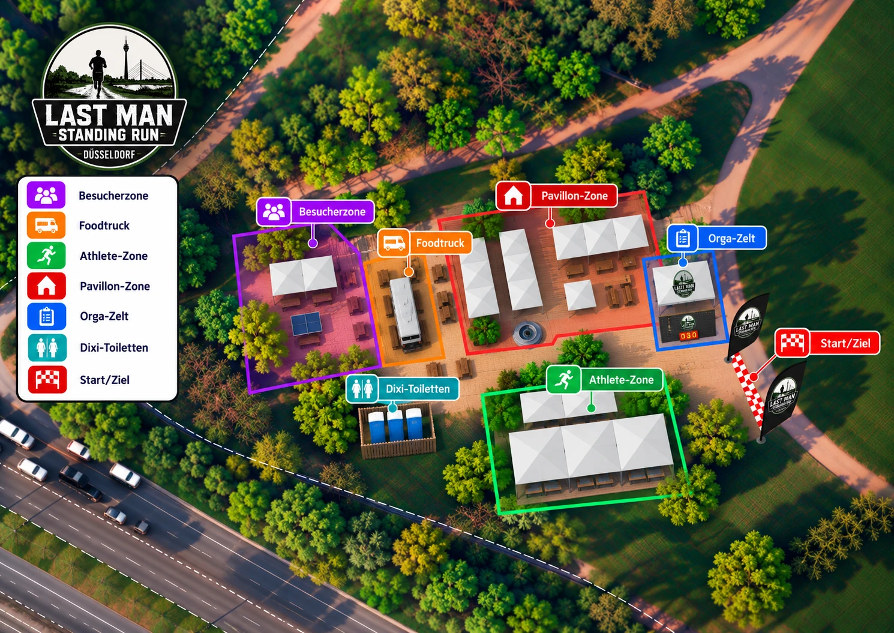
10 € Add-on, nur 12 verfügbar
- 3 × 3 m Stellfläche für deinen eigenen Pavillon, für dich und deine Crew
- Nur zusammen mit einem Teilnahmeticket gültig, ein Pavillon-Ticket pro Teilnahmeticket
- Du kannst die Fläche mit weiteren Athlet*innen teilen
- Ein Pavillon ist nicht im Ticket enthalten
Alle ohne Pavillon-Ticket haben einen Platz in der Athlete Zone (überdachte Fläche von 16 × 8 m und 8 × 4 m).
6 Kilometer, flach, grün, mitten in der Stadt.
Eine Runde führt durch den Südpark und Wersten mit Blick auf Düsseldorfer Stadtkulisse. Nur etwa 15 Höhenmeter pro Runde. Das summiert sich über Nacht trotzdem.
Beachplatte im Südpark, In den Großen Banden, 40225 Düsseldorf. Anreise mit ÖPNV bis Haltestelle Südpark (ca. 200 m zu Fuß). Wenige kostenlose Parkplätze in der Straße „In den Großen Banden“.
Drei Ausgaben. Jedes Jahr mehr Menschen, jedes Jahr weiter.
| Jahr | Name | Runden | Strecke |
|---|---|---|---|
| 2026 | Nicko Statsenko Last Man Standing · Streckenrekord | 30 | 180 km |
| 2025 | Christian Jakl Last Man Standing | 22 | 132 km |
| 2024 | Alessandra Crognale Last Woman Standing | 18 | 108 km |
Strecke berechnet mit 6 km pro Runde.
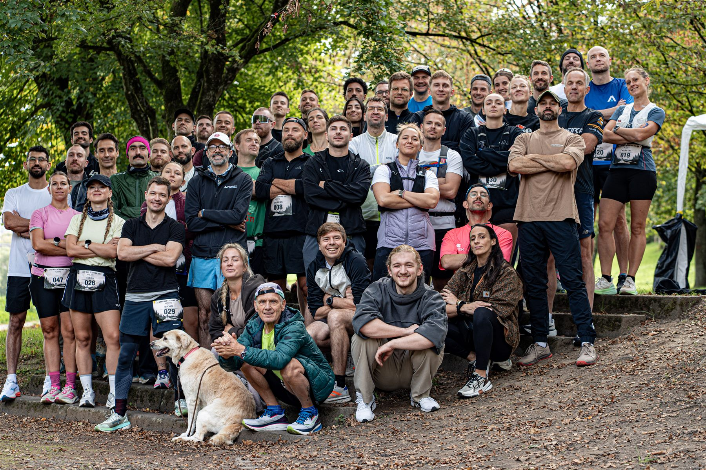
Recap 2026
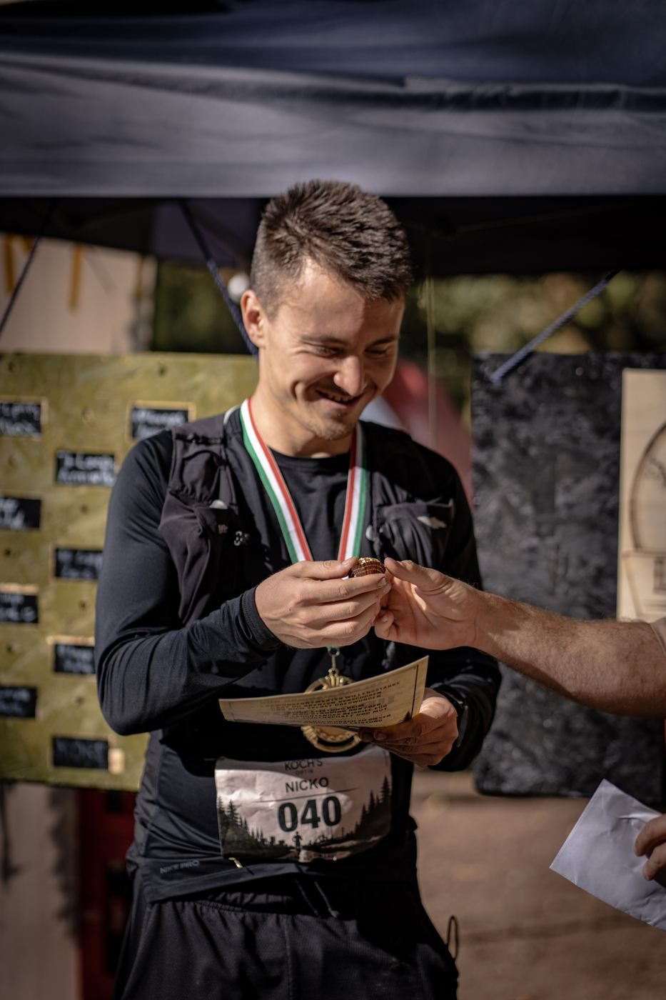
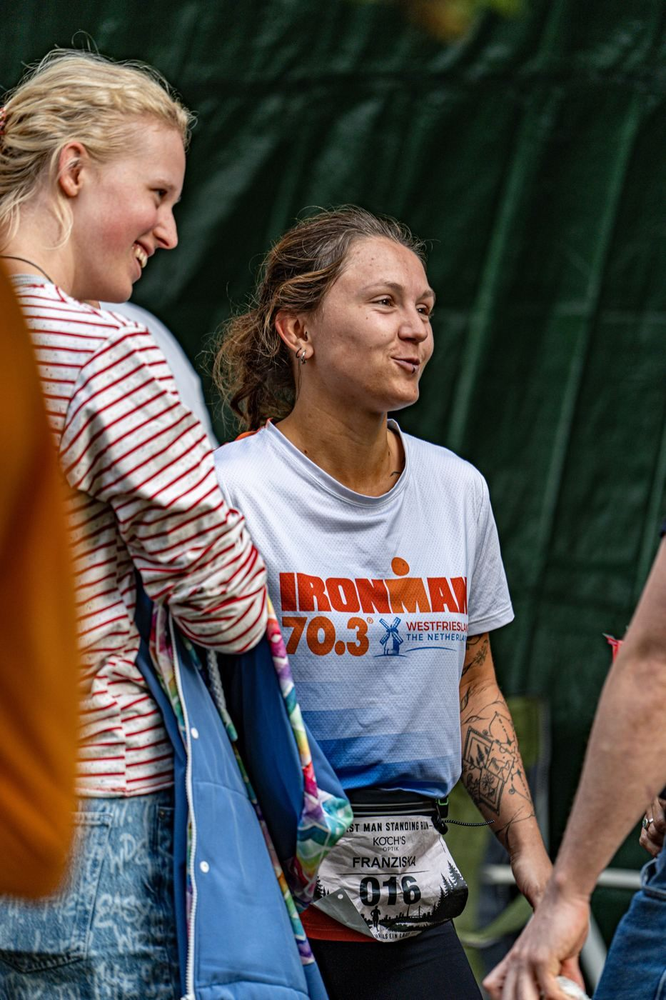
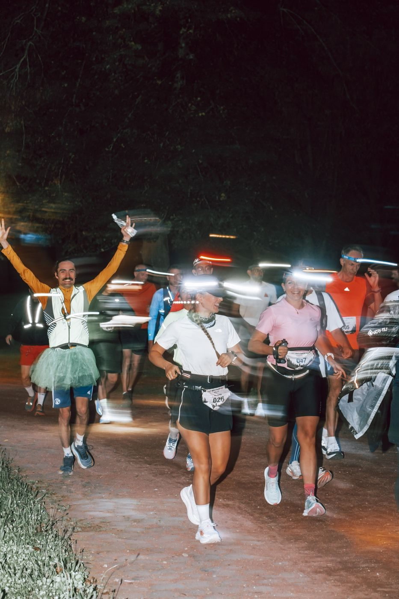
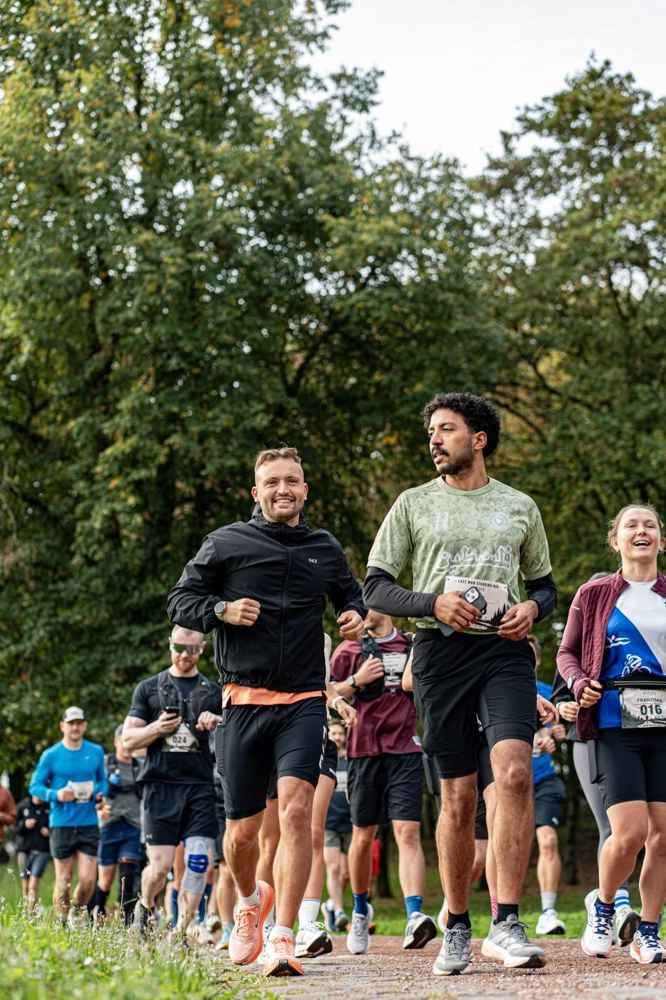
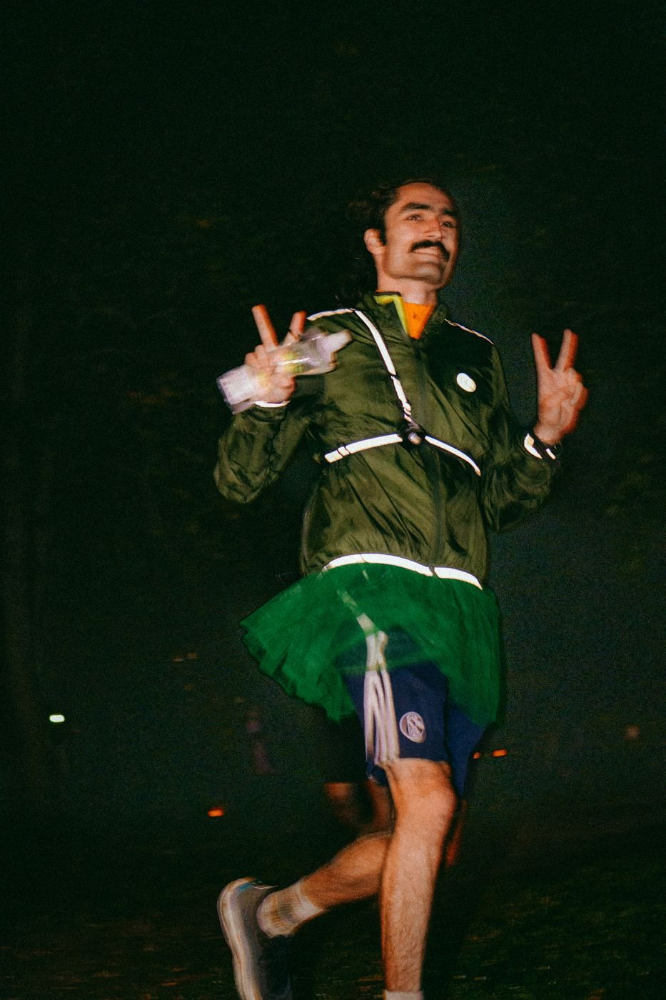
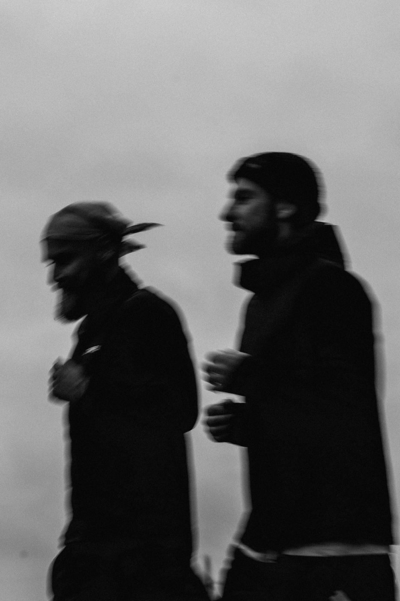
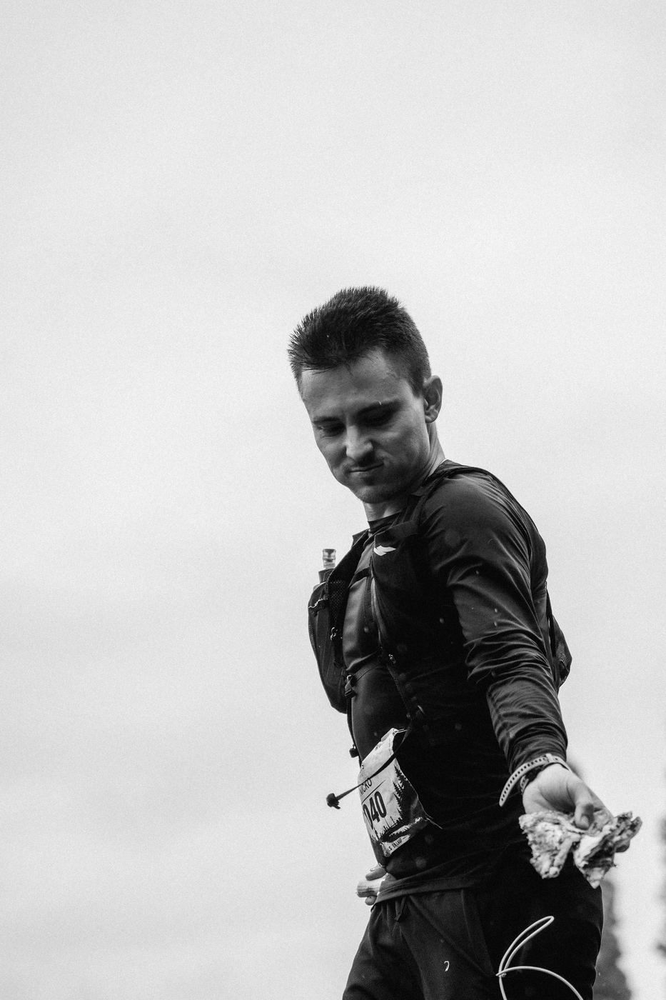
Wenig Regeln. Dafür klare.
Stirnlampe
Funktionierend, zwischen 21:00 und 07:00 Uhr.
Mobiltelefon
Funktionierend, für Notfälle.
- Das Athletenbriefing ist für alle Teilnehmenden verpflichtend.
- Du scheidest aus, wenn du eine Runde nicht in 60 Minuten schaffst oder nicht pünktlich zur vollen Stunde wieder startest.
- Bring ausreichend Powerbanks mit, damit dein Handy die ganze Laufzeit hält.
- Ein eigener Pavillon darf nur mit gekauftem Pavillon-Ticket aufgestellt werden.
- Tickets können nicht erstattet, aber an Dritte übertragen werden, z. B. privat oder in der WhatsApp-Community.
75 Startplätze.
Das günstigste Teilnahmeticket mit allen Leistungen aus dem Ticket.
Tickets werden bald veröffentlichtDas Teilnahmeticket nach den Early-Bird-Plätzen.
Tickets werden bald veröffentlichtPavillon-Ticket: 3 × 3 m Stellfläche für dein Team, nur mit Teilnahmeticket.
Tickets werden bald veröffentlichtDer Verkauf läuft über Ticket Tailor, bezahlen kannst du per Karte (Stripe) oder per Überweisung. Stornoregeln findest du in den AGB.
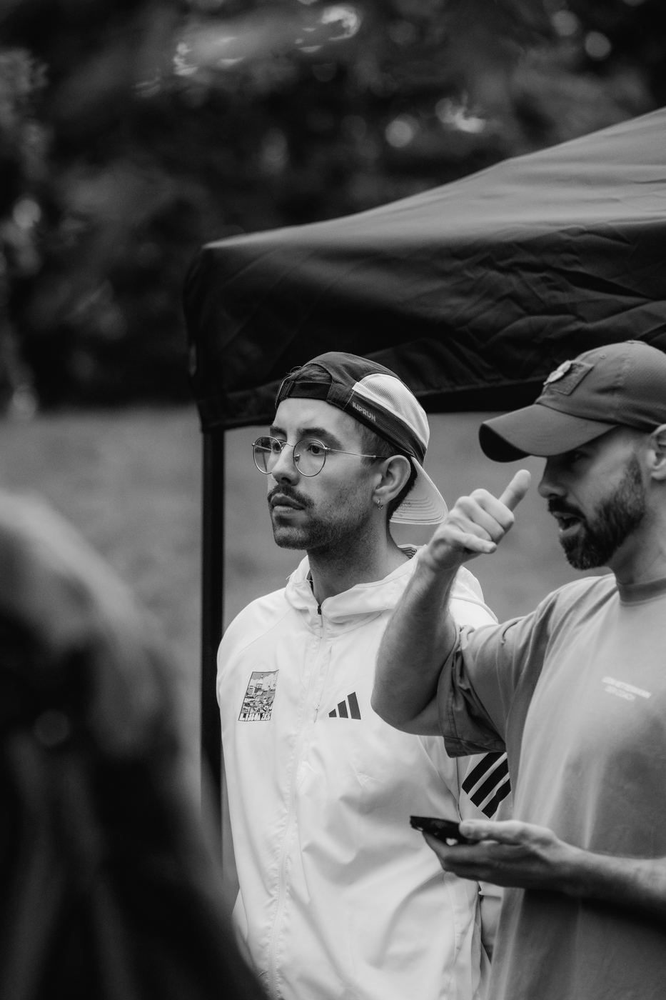
Aus einer Idee unter Freunden wurde Düsseldorfs Backyard Ultra.
Leon Vettermann und Alexander Konrad haben vor drei Jahren zum ersten Mal vom Backyard-Format aus den USA gehört und wollten selbst starten. In der Nähe gab es nichts. Also haben sie es im Oktober 2024 mit Freunden selbst veranstaltet, 2025 wieder im kleinen Kreis.
2026 kam die erste große Ausgabe mit 45 Läufer*innen. Beide leben in Düsseldorf und wollen die Laufszene der Stadt stärken und Menschen die Möglichkeit geben, ihre Grenzen auszuloten und über sich hinauszuwachsen.
Familiäre Atmosphäre, Spaß und mentale Grenzerfahrung, im Herzen von Düsseldorf: genau das ist der Lauf.
Komm vorbei und feuere an.
Mit uns unterwegs.
Sponsor werden
Der Lauf bietet Sichtbarkeit bei einer engagierten Düsseldorfer Laufcommunity: im Camp, auf den Fotos und im Netz. Mediapakete sind in Planung.
Sponsor werdenGut zu wissen.
Muss ich Ultraläufer sein?
Nein. Eine Runde sind 6 km. Wenn du sie in unter einer Stunde schaffst, bist du dabei.
Wie viel Zeit habe ich zwischen den Runden?
Alles, was von der Stunde übrig bleibt. Wer eine Runde in 50 Minuten läuft, hat 10 Minuten Pause.
Was passiert, wenn niemand aufgibt?
Nach Runde 59 entscheidet Runde 60, der „Loop of Glory“. Wer sie am schnellsten beendet, gewinnt.
Darf meine Crew mitkommen?
Nur begrenzt. Es gibt 12 Pavillon-Tickets, alle anderen nutzen die Athlete Zone. Zuschauer haben eine Besucherzone am Basis Camp.
Wie komme ich hin?
Mit dem ÖPNV bis Haltestelle Südpark, danach ca. 200 m zu Fuß. Parkplätze in der Straße „In den Großen Banden“ sind kostenlos, aber begrenzt.
Kann ich mein Ticket zurückgeben?
Bereits erworbene Tickets können nicht erstattet werden. Du kannst sie aber an eine dritte Person übertragen, z. B. privat oder in der WhatsApp-Community.
Ist der Lauf Teil einer offiziellen Serie?
Nein. Der Last Man Standing Run ist ein eigenständiges Event aus Düsseldorf und nicht offiziell in die internationale Backyard-Ultra-Szene eingebunden.
Ich habe noch Fragen.
Schreib uns eine DM auf Instagram (@lastmanstandingrun) oder eine Mail an lastmanstandingrun@gmail.com.
Noch eine Runde?
Es gibt 75 Plätze und einen Sieger. Sichere dir deinen Startplatz, sobald die Tickets live sind.